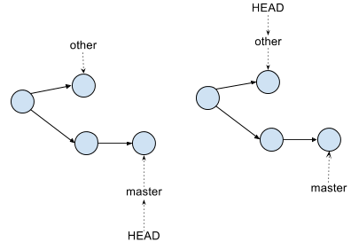
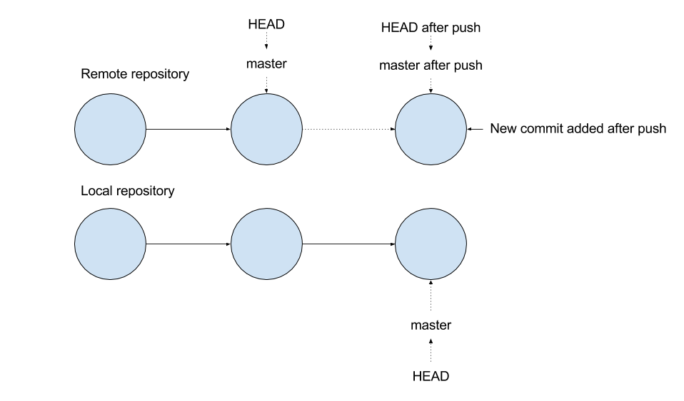

git init Create a new git repository in the working directory. Existing files will not be automatically added to the repository (i.e. they will not be tracked). If a git repository already exists in the working directory, it is reinitialized. More specifically, it creates the .git directory in the current directory with objects, refs/heads, and refs/tags. The reference HEAD will point to the new repository.git clone This command clones a remote repository onto your local machine. It will create remote references for each branch in the repository. It will automatically configure remote.origin.url (for pushing) and remote.origin.fetch (for fetching).git status Tells you the tree and index status (i.e. whether you're ready to commit or not)git add <filename> Adds the changed/created files to the index found in the workspace, to stage the content for its future commit.git rm <filename> Remove a file from git's index, and remove it from the working tree if it exists there.git reset Resets all of the changes since the last commit match back to the last commit. The primary use is git reset --hard, which resets everything.git commit: Record your staged changes to the repository (i.e. the files you have added/modified/deleted) as a new tree object of your working copy, which points to its parent commit (if it's not the first). Finally, it points the current branch to your most recent commit. If you add the -m <msg> flag, you can also leave a comment to detail your changes: git commit -m "fixed all the bugs. lol jk, there's more"
 The Git tree after committing "a2" with parent commit "a1."
The Git tree after committing "a2" with parent commit "a1."
git diff: Displays changes between states in your repository. For example, changes between the working tree and the index or a tree, changes between the index and a tree, changes between two trees, changes between two blob objects, or changes between two files on a disk.git log Shows the commit history. The command will show the author of the commit, the date of the commit, and a commit hash that you can use a git checkout command on to view a detached head version of the repo.git branch <branchname> This command will create a new branch in the current repository, with the name branchname. Without specifying a branch name, it will list all branches.git checkout Change the workspace (i.e. the current files in the directory) to those located at the specified commit. In essence, moves 'you' (a.k.a. HEAD) to the commit. If you add the -b flag, it will create a new branch with the specified name: git checkout -b <new_branch_name>.

git remote: Set, edit, and remove "remotes" (variables that hold urls to git repository). For example, instead of saying git push [LONG URL] master, you can say git push [remote name] master. The git remote command has subcommands you can use to manipulate remotes—e.g. to add a remote, use git remote add [remote_name] [remote_url].git push Bring the remote up to date with your local copy, by updating the references (HEAD, master, etc.) on the remote using local references and sending objects that are present locally but not remotely.

git fetch: Downloads objects and refs from another repository. Fetch refs from one or more other repositories, along with the objects necessary to complete their histories.git merge <branchname> Adds the changes from the given commits into the current branch. Specifically, this command replays the changes made on the named commit (i.e. git pull topic) and records the result in a new commit. This command is used by git pull by default to incorporate changes from another repository.git pull <remote_repo> <remote_branch>: Runs git fetch (with the given parameters) followed by git merge to merge retrieved branch heads into the current branch.